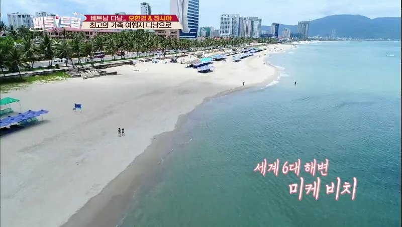
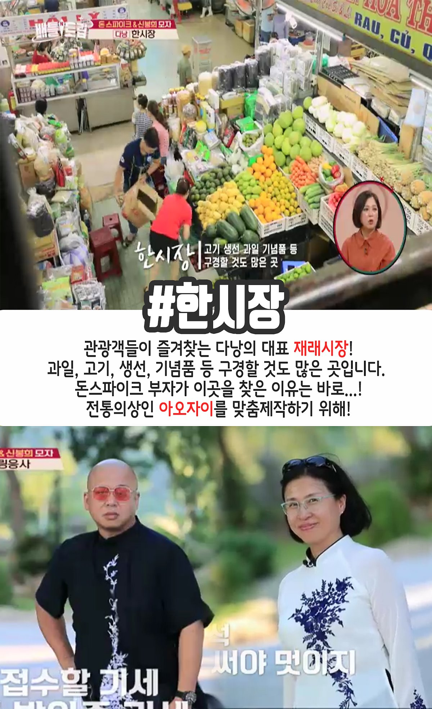
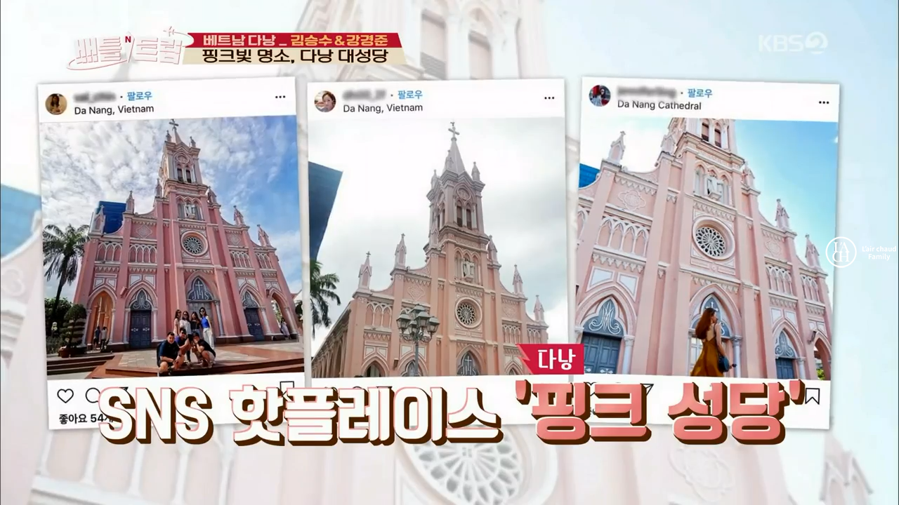

미국 경제지 <포브스>가 꼽은 섹계 6대 해변 가운데 하나인 미케 비치, 수온이 높고 경사가 완만해 해수욕하기 좋은 해변이다. 투명해서 속이 훤히 들여다 보이는 바다는 아니지만 부드러운 백사장이 끝없이 이어지고 포근한 햇빛으로 일광욕을 마음껏 즐길 수 있으며 해양 스포츠에도 알맞은 바다다.
다낭 시내 중심에 위치한 쇼핑센터 한시장. 현지인과 여행자 모두가 즐겨 찾는 시장이다. 1층에서는 건어물이나 말린과일, 소스 등 특산품과 식재료를 주로 취급. 2층에서는 의류와 신발, 잡화 등을 판다. 여기 서 베트남 여자들의 전통 의상 아오자이를 맞춰 입을 수 있다.
베트남이 프랑스 식민지를 거치던 그 시절, 다낭 시에 세워진 성당. 다낭에 거주하던 프랑스인들이 1923년에 지었다. 고딕 양식, 파스텔톤의 분홍빛이 곱다. 첨탑 끝에 수탉 모양의 풍향계가 있어 수탉 성당이라는 별칭으로도 불린다. 성당 뒤편에는 프랑스 루르드성모 발현지의 것을 본뜬 성모 마리아 상이 놓여 있다. 일요일에는 한국어 미사도 진행한다.
